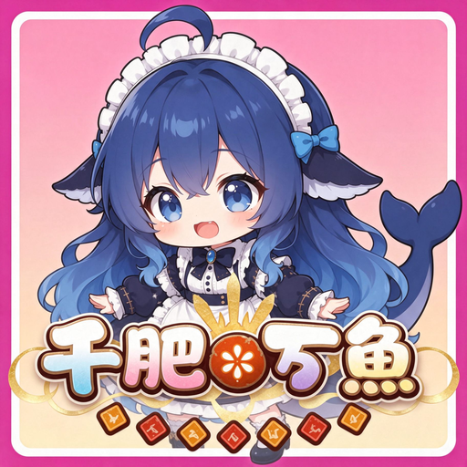

立绘槽位
把图片拖到这里
或在「设置 → 立绘 / 素材」上传
把图片拖到这里
或在「设置 → 立绘 / 素材」上传

千肥万鱼本地优先 · 人格可同步
连接中
心情 —
♥ 好感 0
⚡ 游戏模式
—
要做点什么— 项
对话 · 未连接
鲸鱼娘
◈ 下一步，去哪里？选一个地方，她会跟着过去
◈
提到场景
让她想一想…
点击对话框可跳过文字
快捷音量
100%
35%
25%
50%
观察记录
—BACKLOG
对话回顾 · 点右侧喇叭可重听这句话
重播用当前语音引擎实时合成，不会保存音频文件
她的日记

篇章
翻页
观察台设置
只影响这个页面，不改动 DSH 的任何数据角色形态
两套内置形象，随时切换：成熟鲸鱼娘（默认）、Q版鲸鱼娘。两套都共用同一套场景库背景，各自有立绘表情（按心情 / 时段 / 对话自动换脸）与胸像通话窗；表情素材来自鲸鱼娘二创扩展包（角色参考 TreapGoGo/deepseek-whale-girl，MIT）。
当前形态：—
名字
默认直接使用 DSH 里读到的名字（下方名牌即当前生效的名字）。想临时换个称呼时展开下面的「自定义名字」，改动只在观察台内生效，不会写回 DSH。
名牌预览
来自 DSH
自定义名字（可选，展开后填写）
留空即跟随 DSH 的名字；只有填了内容的项才会覆盖。
只改对话记录里你那一行显示的名字，和上面她怎么称呼你分开
DSH 里读到的原始设定
桌宠名—
角色—
主人—
设置存于 settings.json；素材存于 assets/uploads/；人格卡存于 persona.json；日记存于 data/diaries/。只有你在人格卡里点「保存到 DSH」时才写回 DSH 的 persona.md，并先备份原文。
.dsh 默认只读（人格同步除外） · 日记与记忆整理只存在 fish-watch · 第三方模型仅在你点击时调用